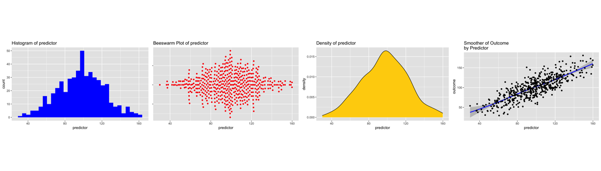

1
Background
2
ggplot in 3 easy steps (maybe 2 easy steps)
2.1
aesthetic
:
what
you want to graph (e.g. x, y, z).
2.2
geom
:
how
you want to graph it.
2.3
options
:
optional
titles, themes, etc.
3
A Simple Quick Example
4
Call The Relevant Libraries
5
Simulated Data
6
The Essential Idea Of
ggplot2
Is Simple.
6.1
ggplot2 Starts By Calling The
aes
thetic
6.2
We Then Call The
geom
etry
7
Examples
7.1
One Continuous Variable At A Time
7.1.1
Dotplot
7.1.2
Add Some Options
7.1.3
Different Geoms
7.2
One Categorical Variable at a Time
7.3
A Categorical Variable and A Continuous Variable
7.3.1
Barchart
7.4
Two Continuous Variables At A Time
7.4.1
Basic Scatterplot
7.4.2
Add Some Options
7.4.3
Try A Smoother
7.4.4
Try A Density Plot
7.4.5
Try a Hexagon Geom
7.4.6
Combine Points and Smoother And Add Some Themes
7.5
Two Continous Variables And A Third Categorical Variable
7.5.1
Modify the aesthetic to include
group
.
7.5.2
Add facets or “small multiples” by group
8
There Is A Lot More That Can Be Done With ggplot2
Introduction to ggplot2
2
ggplot in 3 easy steps (maybe 2 easy steps)
2.1
aesthetic
:
what
you want to graph (e.g. x, y, z).
2.2
geom
:
how
you want to graph it.

2.3
options
:
optional
titles, themes, etc.